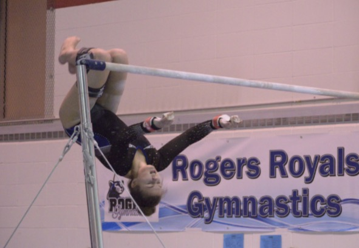
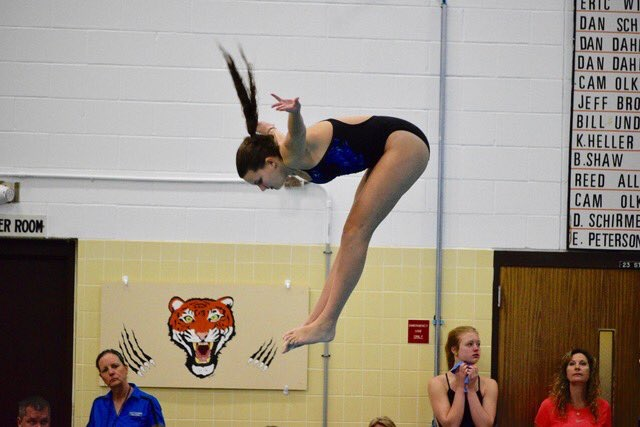

More About Me
I grew up in Rogers, Minnesota right across the street from both my middle school and high school. Throughout my childhood I tried playing soccer and tennis, but ended up choosing gymnastics as my lifelong sport until I graduated high school.
I was a gymnast for 16 years of my life, and it has played a big role in shaping me into the person I am today. Gymnastics taught me what it meant to be on a team and to have goals outside of your own life. I developed leadership as a gymnast and learned how to push myself to my limits.
Below is a picture of me doing a dismount on my favorite event: uneven bars.
My diving career
Once I was a sophomore in high school, I added springboard diving to that list of sports. It terrified me, but it gave me confidence and lessons that I will keep with me for the rest of my life. I have never been a strong swimmer, so if you would've told me I would ever be a diver, I would have laughed in your face.
I surprised myself with how quickly I picked up on the skills for diving, which is definitely thanks to my gymnastics background. By the time I was a senior in high school, I was good enough to place 8th at the sections meet which earned me a spot on the podium!
Here is a picture of me competing at a meet in Cambridge, MN in 2017.
